Hide/Show
espece='Ee10m3'; cespece='Anchovy'; ccolor='blue';maxvalue=200
listyears=c(2000:2019,2021:2024)
file.data='DataEggs/Cufes_spring_ifremer.txt'
data.eggs=read.table(file=file.data,sep="\t",header=T)espece='Ee10m3'; cespece='Anchovy'; ccolor='blue';maxvalue=200
listyears=c(2000:2019,2021:2024)
file.data='DataEggs/Cufes_spring_ifremer.txt'
data.eggs=read.table(file=file.data,sep="\t",header=T)data.eggs_sf <- st_as_sf(data.eggs, coords = c("Long", "Lat"), crs = "WGS84")
plot_eggs <- ggplot(data = data.eggs_sf) +
geom_sf(aes(color = Ee10m3), alpha = 0.8, size = 1) +
facet_wrap(~ Year) +
scale_color_viridis_c(trans = "log", na.value = "grey80", name = expression("Log(Eggs/10m³)\n grays are zero")) +
ggtitle("Total Anchovy eggs")
plot_eggs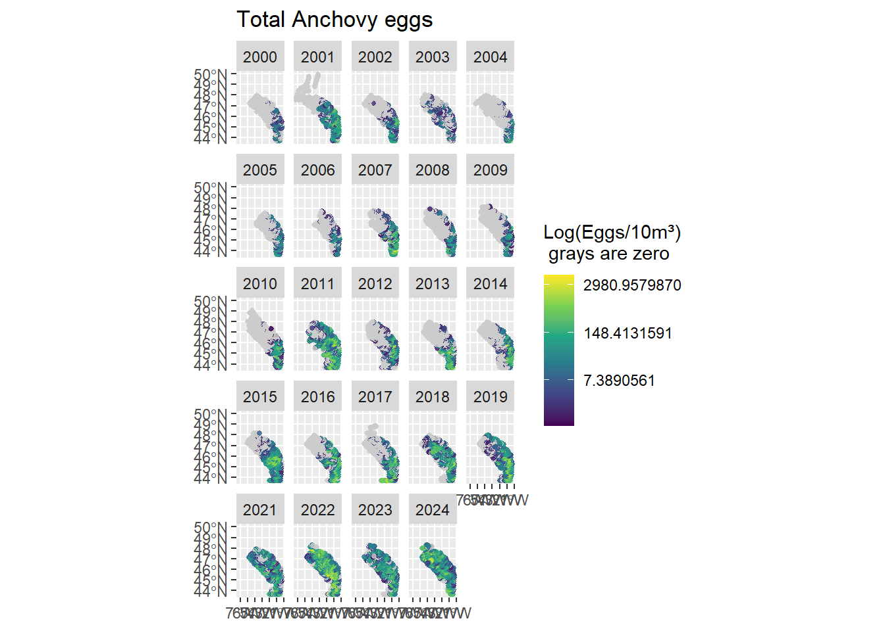
data.eggs<- data.eggs %>% filter(Lat < 48 & is.na(Sp10m3)==F) %>%
mutate(Year=as.factor(Year), time=as.integer(Year))
data.eggs <- add_utm_columns(data.eggs, c("Long", "Lat"), ll_crs = 4326, units = "km") #Project coordinates to KmProceeding with UTM zone 30N; CRS = 32630.Visit https://epsg.io/32630 to verify.data.eggs_sf <- st_as_sf(data.eggs, coords = c("Long", "Lat"), crs = "WGS84")
plot_eggs <- ggplot(data = data.eggs_sf) +
geom_sf(aes(color = Ee10m3), alpha = 0.8, size = 0.8) +
facet_wrap(~ Year) +
scale_color_viridis_c(trans = "log", na.value = "grey80", name = expression("Log(Eggs/10m³)\n grays are zero")) +
ggtitle("Total Anchovy eggs")
plot_eggs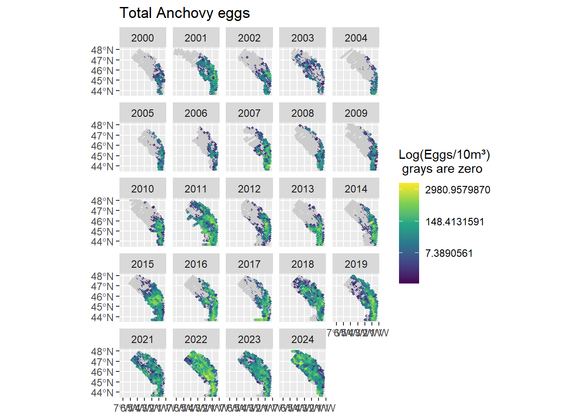
projection_grid <- readRDS("./DataEggs/user_region.rds")
projection_grid_UTM <- add_utm_columns(projection_grid, c("Lon", "Lat"), ll_crs = 4326, units = "km")Detected UTM zone 30N; CRS = 32630.Visit https://epsg.io/32630 to verify.plot(projection_grid_UTM$X,projection_grid_UTM$Y)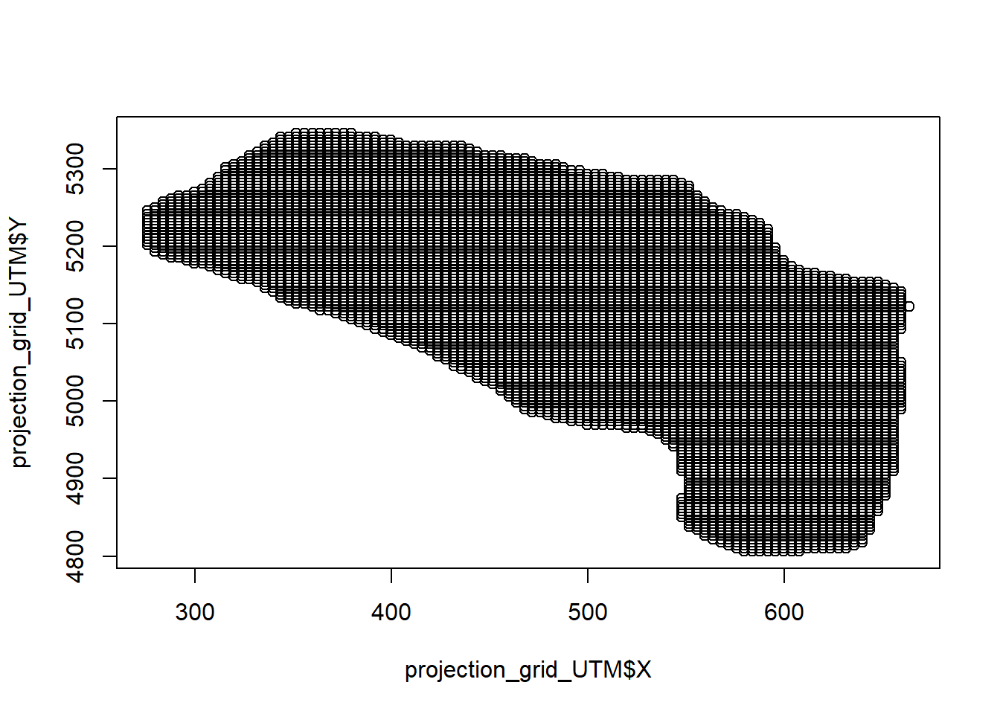
grid_yrs <- replicate_df(projection_grid_UTM, c("Year"), as.factor(unique(data.eggs$Year))) %>%
mutate(time=as.integer(Year))In these kinds of models, the spatial (ωs) and the spatiotemporal (εs,t) variations (and potentially any spatial varying coefficient) are modeled as Gaussian Random Fields (GRF), where the random effects describing the spatial patterns are assumed to be drawn from a multivariate normal distribution MVNormal (0,Σ). Estimating this covariance matrix (Σ) is computational demanding, so the SPDE approach is used to approximate the Gaussian random fields.
For the SPDE approximation approach you need another grid called the mesh which is a triangulated mesh with Knots. These Knots are used to approximate the spatial variability in your data and because the number of Knots << number of data points the computation of the covariance is easier. The Matern correlation is used as a covariance function to account for spatial autocorrelation.
Maybe more discussion in how you contract the mesh (ex. who many Knots you need)
So, so far we have three grids with different spatial resolution :
The data grid (your sampling points, those data are used to estimate fixed parameres)
The mesh (for the Gaussian Random Fields approximation)
The prediction grid ( for predictions using your final model).
So the mesh is:
mesh <- make_mesh(data.eggs, xy_cols = c("X", "Y"), cutoff = 30) # cutoff: minimum distance between knots before a new mesh vertex is added- units as in your dataset
plot(mesh) 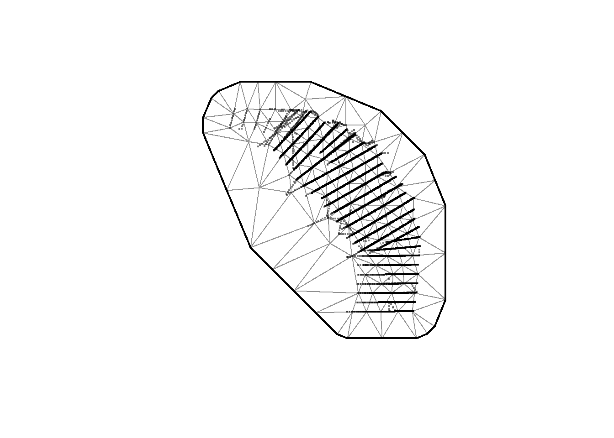
The first model (m1) follows that formula:
μs,t= exp(βt+ ωs),
μs,t= log(ys,t ),
ys,t ~ Tweedie (μs,t ,p, φ) , ω~ MVNormal (0,Σω)
where the modeled egg density (μs,t) follows the Tweedie distribution with a log link function, as egg density is positive, continuous and contains zeros.
ys,t represents eggs density (no of eggs/10m2) at space (s) and time(t), μ is the mean density at time and space and p, φ represent power and dispersion parameters of the Tweedie distribution, respectively.
βt are the fixed effects for factor(Year), they represent the average temporal variation
ωs is the spatial random effect, drawn from a GRF with covarianvce matrix Σω using Maretn correlation function. It represents the average spatial pattern (nich effect) and it also accounts for spatial variation that is not accounted for by our fixed effects. In other words, these deviations represent consistent biotic and abiotic factors that are affecting biomass density but are not accounted for in the model.
fit_m1 <- sdmTMB(
Ee10m3 ~ 0 + Year,
data = data.eggs,
mesh = mesh,
family = tweedie(link = "log"),
spatial = "on"
)fit_m1 Spatial model fit by ML ['sdmTMB']
Formula: Ee10m3 ~ 0 + Year
Mesh: mesh (isotropic covariance)
Data: data.eggs
Family: tweedie(link = 'log')
coef.est coef.se
Year2000 -0.64 0.88
Year2001 2.17 0.87
Year2002 0.67 0.88
Year2003 0.67 0.88
Year2004 -0.03 0.88
Year2005 -0.09 0.88
Year2006 -0.26 0.88
Year2007 2.17 0.88
Year2008 0.30 0.88
Year2009 0.10 0.88
Year2010 1.45 0.88
Year2011 3.58 0.87
Year2012 1.91 0.88
Year2013 2.10 0.88
Year2014 2.24 0.88
Year2015 2.89 0.87
Year2016 2.71 0.88
Year2017 2.29 0.88
Year2018 2.98 0.87
Year2019 2.87 0.87
Year2021 2.99 0.87
Year2022 4.64 0.87
Year2023 3.11 0.87
Year2024 4.38 0.87
Dispersion parameter: 10.92
Tweedie p: 1.68
Matérn range: 132.80
Spatial SD: 2.37
ML criterion at convergence: 52199.829
See ?tidy.sdmTMB to extract these values as a data frame.fix_effects<- tidy(fit_m1, conf.int = TRUE)
fix_effects# A tibble: 24 × 5
term estimate std.error conf.low conf.high
<chr> <dbl> <dbl> <dbl> <dbl>
1 Year2000 -0.637 0.882 -2.37 1.09
2 Year2001 2.17 0.875 0.458 3.89
3 Year2002 0.675 0.878 -1.05 2.40
4 Year2003 0.665 0.878 -1.05 2.39
5 Year2004 -0.0279 0.880 -1.75 1.70
6 Year2005 -0.0851 0.881 -1.81 1.64
7 Year2006 -0.257 0.881 -1.98 1.47
8 Year2007 2.17 0.876 0.450 3.89
9 Year2008 0.297 0.879 -1.42 2.02
10 Year2009 0.102 0.879 -1.62 1.83
# ℹ 14 more rowsrandom_effects<- tidy(fit_m1, effects = "ran_pars", conf.int = TRUE)
random_effects# A tibble: 4 × 5
term estimate std.error conf.low conf.high
<chr> <dbl> <dbl> <dbl> <dbl>
1 range 133. 39.6 74.0 238.
2 phi 10.9 0.122 10.7 11.2
3 sigma_O 2.37 0.462 1.62 3.48
4 tweedie_p 1.68 0.00303 1.67 1.68Other than the effect of the spatial random field you have: :
Matérn range: the distance at witch you have no correlation - similar to the variogram range
phi (φ) & tweedie_p (p): the dispersion parameter and the power of the Tweedie distribution, respectively.
ggplot() +
geom_point(data = fix_effects, aes(x = estimate, y = term, col = term)) +
geom_errorbar(data = fix_effects, aes(y = term, xmin = conf.low, xmax = conf.high, color = term), width = 0.2) +
geom_point(data = random_effects %>% filter(term == "sigma_O"), aes(x = estimate, y = term)) +
geom_errorbar(data = random_effects %>% filter(term == "sigma_O"), aes(y = term, xmin = conf.low, xmax = conf.high), width = 0.2) +
labs( title = expression("Mean and 95% confidence intervals of the fixed & random effects," ~ m[1]),
subtitle = expression(mu[s~t] ~ "=" ~ exp(beta[t] + omega[s]))) +
theme_bw() +
theme(legend.position = "none")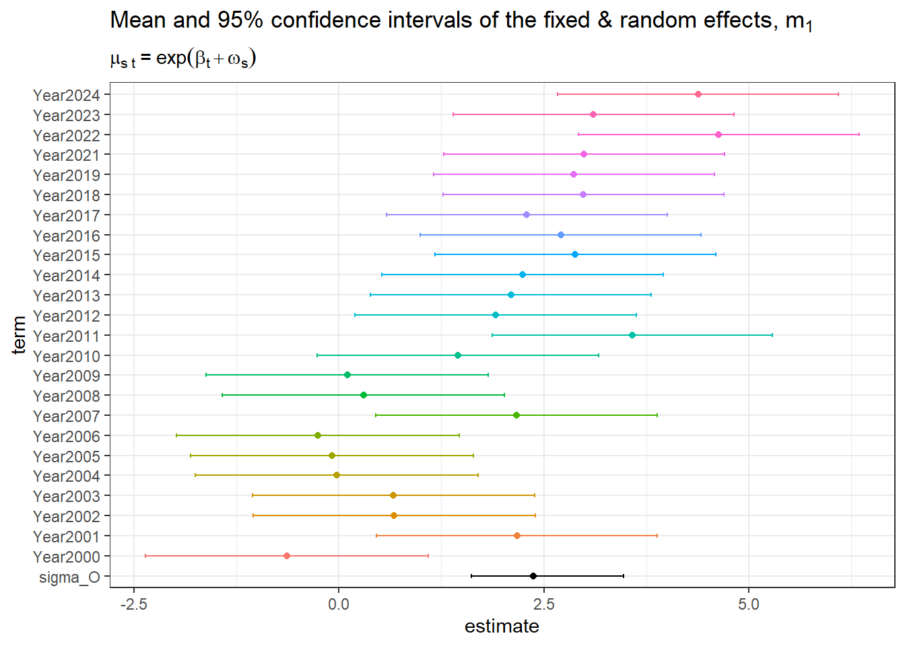
You can see that the effect of spatial term is the most “important” one. Space is the more influential parameter in egg distribution in this model.
What do you check?
Residuals?
sanity(fit_m1)✔ Non-linear minimizer suggests successful convergence✔ Hessian matrix is positive definite✔ No extreme or very small eigenvalues detected✔ No gradients with respect to fixed effects are >= 0.001✔ No fixed-effect standard errors are NA✔ No standard errors look unreasonably large✔ No sigma parameters are < 0.01✔ No sigma parameters are > 100✔ Range parameter doesn't look unreasonably largeYou now perform a prediction in you prediction grid using the fitted model m1. When you visualize your prediction in a map you can visualize your final prediction your model (eg. the estimated number of eggs) or you can visualize separately each part of the decomposition (the effect of the fixed covariates and the effect of the random fields (ωs, εs,t) and see what is going on.
#Predict in the prediction grid that has been created above
p_m1 <- predict(fit_m1, newdata = grid_yrs)plot_m1 <- ggplot(data=p_m1, aes(X, Y, fill = exp(est))) +
geom_raster() + facet_wrap(vars(Year)) +
scale_fill_viridis_c(trans = "log")+
ggtitle("Prediction (fixed effects + random effects) based on full m1",
subtitle = expression("The estimated density of eggs " * log(mu[st]) * ": " * mu[st] == exp(beta[t] + omega[s])))
plot_m1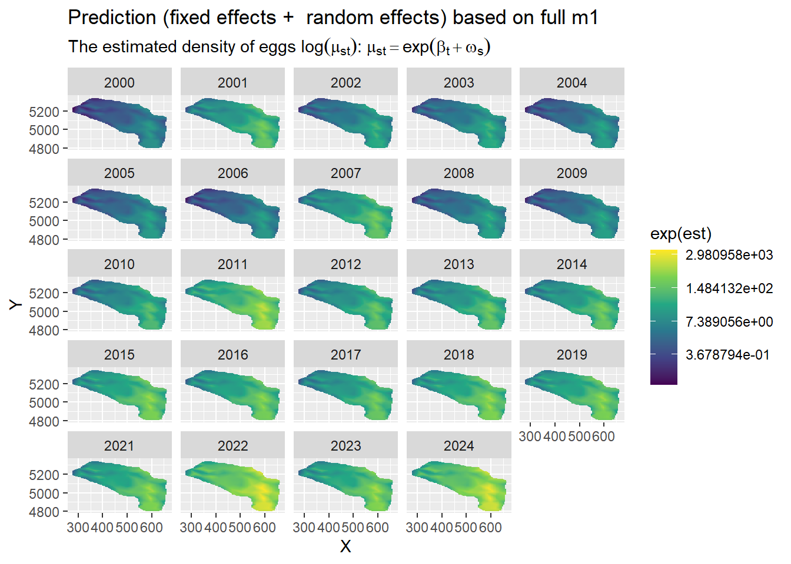
plot_m1 <- ggplot(data=p_m1, aes(X, Y, fill = exp(est_non_rf))) +
geom_raster() + facet_wrap(vars(Year)) +
scale_fill_viridis_c(trans = "log")+
ggtitle("Prediction (fixed effects only) based on full m1",
subtitle = expression("The effect of time in the estimated variable " * (beta[t]) * ": " * mu[st] == exp(beta[t] + omega[s])))
plot_m1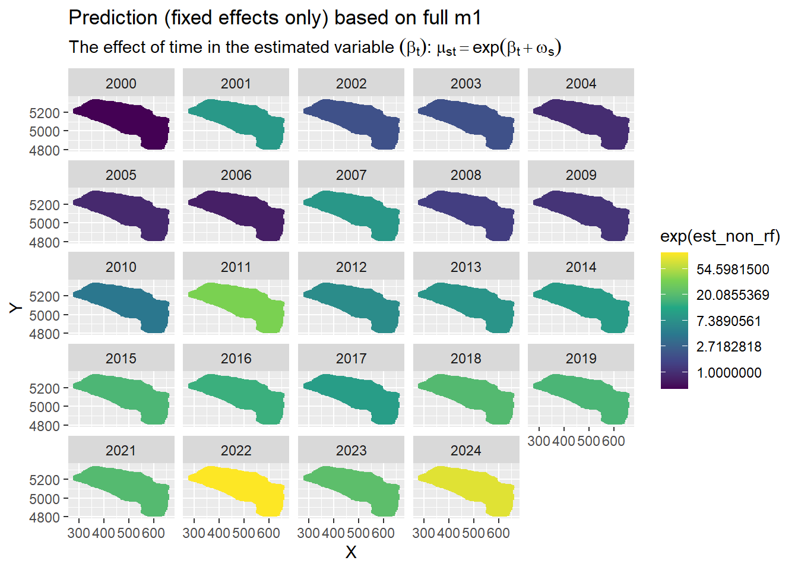
Here spatial random effect only
plot_m1 <- ggplot(data=p_m1, aes(X, Y, fill = exp(omega_s))) +
geom_raster() +
scale_fill_viridis_c(trans = "log")+
ggtitle("Prediction (random effects only) based on full m1",
subtitle = expression("The effect of space in the estimated variable " * (omega[s]) * ": " * mu[st] == exp(beta[t] + omega[s])))
plot_m1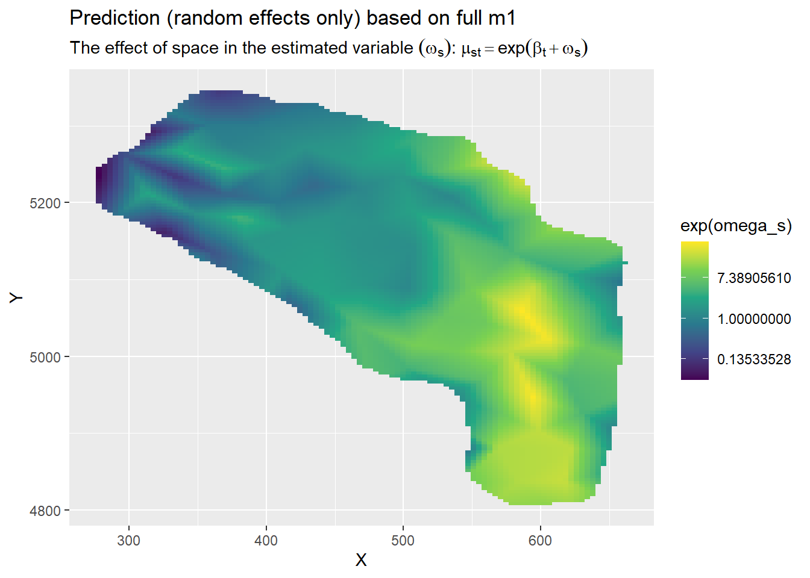
For the ωs we have only one map because the spatial effect is stable across time. This is the mean spatial effect estimated from your data and it also represents the mean spatial distribution. If you want to see if or how the spatial effect changes in time then you need a spatiotemporal random effect (see m2).
This spatial random effect represents variance in space (but consistence through time) coming from the data that are not accounted by the fixed effects. In this model compared to m1 the spatial random effect is less influential because a part of the variability is now explained by the spatiotemporal effect term.
The 2nd model (m2) follows that formula:
μs,t= exp(βt+ ωs + εs,t),
μs,t= log(ys,t ),
ys,t ~ Tweedie (μs,t ,p, φ) , ω~ MVNormal (0,Σω) , εt ~ MVNormal (0,Σt)
where the modeled egg density (μs,t) follows the Tweedie distribution with a log link function, as egg density is positive, continuous and contains zeros.
ys,t represents eggs density (no of eggs/10m2) at space (s) and time(t), μ is the mean density at time and space and p, φ represent power and dispersion parameters of the Tweedie distribution, respectively.
βt are the fixed effects for factor(Year), they represent the average temporal variation
ωs is the spatial random effect, drawn from a GRF with covarianvce matrix Σω using Maretn correlation function. It represents the average spatial pattern (nich effect) and it also accounts for spatial variation that is not accounted for by our fixed effects. In other words, these deviations represent consistent biotic and abiotic factors that are affecting biomass density but are not accounted for in the model.
εs,t represents the spatiotemporal random effect, drawn from a GRF with covarianvce matrix Σε. They represents how the average spatial pattern change through year so they also for spatial variation that is not accounted for by our fixed effects and the spatial random effects. In other words, these deviations represent consistent biotic and abiotic factors that are affecting our study variable but are not accounted for in the model.
In this model Spatiotemporal random fields are considered independent and identically distributed each single year (spatiotemporal = “IID”) and Maretn correlation function to accounts for spatial autocorrelation.
Are there other options for spatiotemporal fields:
“AR1”: first-order autoregressive (each random filed is correlated to the one of the previous year )
“RW”: random walk (each random filed starts fro where it was last year plus a completely independent deviation)
fit_m2 <- sdmTMB(
Ee10m3 ~ 0 + Year,
data = data.eggs,
mesh = mesh,
family = tweedie(link = "log"),
spatial = "on",
spatiotemporal = "IID",
time = "time")fit_m2Spatiotemporal model fit by ML ['sdmTMB']
Formula: Ee10m3 ~ 0 + Year
Mesh: mesh (isotropic covariance)
Time column: time
Data: data.eggs
Family: tweedie(link = 'log')
coef.est coef.se
Year2000 -5.80 2.01
Year2001 -2.50 1.89
Year2002 -2.34 1.91
Year2003 -0.96 1.85
Year2004 -5.60 2.01
Year2005 -4.16 2.04
Year2006 -4.82 2.03
Year2007 -2.22 1.96
Year2008 -4.80 2.00
Year2009 -5.94 2.00
Year2010 -4.88 1.95
Year2011 2.14 1.78
Year2012 -1.62 1.86
Year2013 -3.87 1.95
Year2014 -3.07 1.91
Year2015 -0.07 1.84
Year2016 -1.06 1.88
Year2017 -0.90 1.86
Year2018 -0.25 1.85
Year2019 0.52 1.84
Year2021 2.06 1.81
Year2022 1.83 1.82
Year2023 0.19 1.84
Year2024 1.34 1.82
Dispersion parameter: 5.60
Tweedie p: 1.60
Matérn range: 159.98
Spatial SD: 2.65
Spatiotemporal IID SD: 3.25
ML criterion at convergence: 46629.497
See ?tidy.sdmTMB to extract these values as a data frame.fix_effects<- tidy(fit_m2, conf.int = TRUE)
fix_effects# A tibble: 24 × 5
term estimate std.error conf.low conf.high
<chr> <dbl> <dbl> <dbl> <dbl>
1 Year2000 -5.80 2.01 -9.74 -1.87
2 Year2001 -2.50 1.89 -6.21 1.21
3 Year2002 -2.34 1.91 -6.07 1.40
4 Year2003 -0.962 1.85 -4.59 2.66
5 Year2004 -5.60 2.01 -9.54 -1.67
6 Year2005 -4.16 2.04 -8.16 -0.156
7 Year2006 -4.82 2.03 -8.80 -0.843
8 Year2007 -2.22 1.96 -6.06 1.62
9 Year2008 -4.80 2.00 -8.72 -0.886
10 Year2009 -5.94 2.00 -9.86 -2.01
# ℹ 14 more rowsrandom_effects<- tidy(fit_m2, effects = "ran_pars", conf.int = TRUE)
random_effects# A tibble: 5 × 5
term estimate std.error conf.low conf.high
<chr> <dbl> <dbl> <dbl> <dbl>
1 range 160. 11.0 140. 183.
2 phi 5.60 0.0746 5.45 5.75
3 sigma_O 2.65 0.301 2.12 3.31
4 sigma_E 3.25 0.158 2.95 3.57
5 tweedie_p 1.60 0.00335 1.59 1.60Other than the effect of the spatial random (sigma_O) and the spatiotemporal random field (sigma_E) field you have: :
Matérn range: the distance at witch you have no correlation - similar to the variogram range
phi (φ) & tweedie_p (p): the dispersion parameter and the power of the Tweedie distribution, respectively.
ggplot() +
geom_point(data = fix_effects, aes(x = estimate, y = term, col = term)) +
geom_errorbar(data = fix_effects, aes(y = term, xmin = conf.low, xmax = conf.high, color = term), width = 0.2) +
geom_point(data = random_effects %>% filter(term == c("sigma_O","sigma_E")), aes(x = estimate, y = term)) +
geom_errorbar(data = random_effects %>% filter(term == c("sigma_O","sigma_E")), aes(y = term, xmin = conf.low, xmax = conf.high), width = 0.2) +
labs( title = expression("Mean and 95% confidence intervals of the fixed & random effects," ~ m[2]),
subtitle = expression(mu[s~t] ~ "=" ~ exp(beta[t] + omega[s] +epsilon[st]))) +
theme_bw() +
theme(legend.position = "none")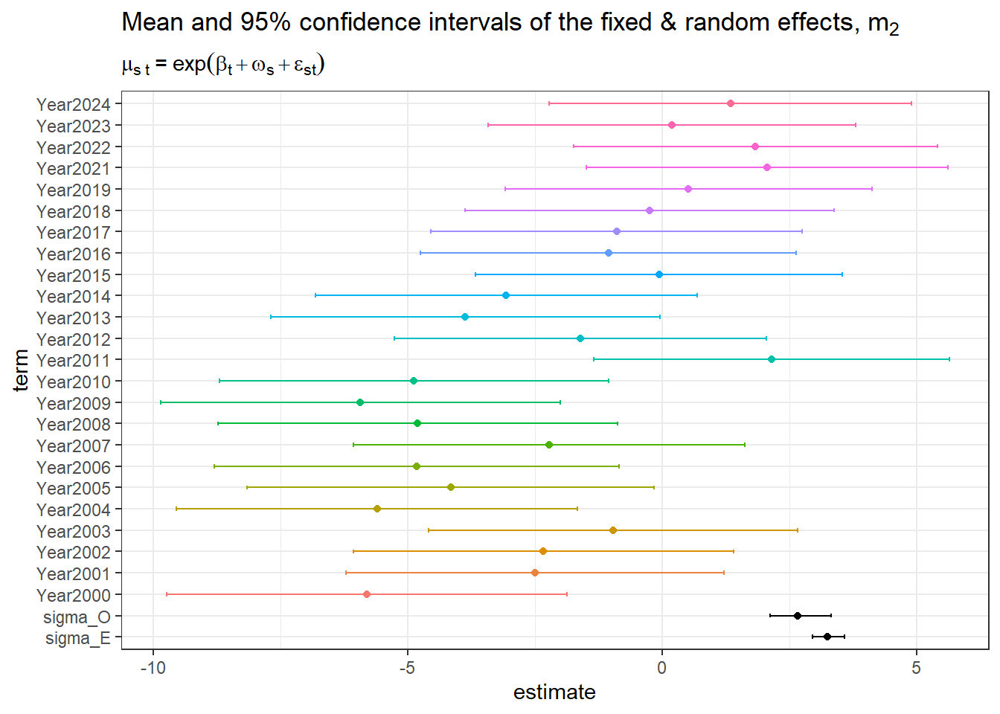
You can see that the effect of spatial term is steal the most “important” one. But a lot of is effect is now explained by the spatiotemporal effect.
sanity(fit_m2)✔ Non-linear minimizer suggests successful convergence✔ Hessian matrix is positive definite✔ No extreme or very small eigenvalues detected✔ No gradients with respect to fixed effects are >= 0.001✔ No fixed-effect standard errors are NA✔ No standard errors look unreasonably large✔ No sigma parameters are < 0.01✔ No sigma parameters are > 100✔ Range parameter doesn't look unreasonably largeYou can steel predict in the same grid as m1 as no more covariates have been added to the model.
p_m2 <- predict(fit_m2, newdata = grid_yrs)plot_m2 <- ggplot(data=p_m2, aes(X, Y, fill = exp(est))) +
geom_raster() + facet_wrap(vars(Year)) +
scale_fill_viridis_c(trans = "log")+
ggtitle("Prediction (fixed effects + random effects) based on full m2",
subtitle = expression("The estimated density of eggs " * log(mu[st]) * ": " * mu[st] == exp(beta[t] + omega[s]+ epsilon[st])))
plot_m2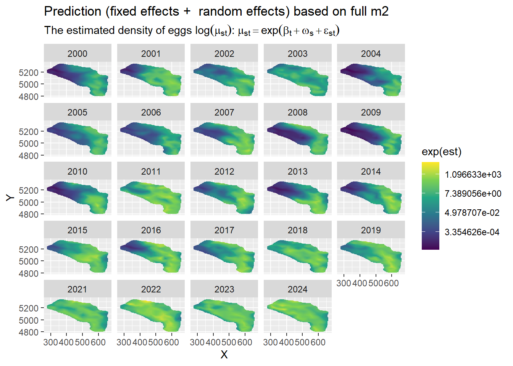
plot_m2 <- ggplot(data=p_m2, aes(X, Y, fill = exp(est_non_rf))) +
geom_raster() + facet_wrap(vars(Year)) +
scale_fill_viridis_c(trans = "log")+
ggtitle("Prediction (fixed effects only) based on full m2",
subtitle = expression("The effect of time in the estimated variable " * (beta[t]) * ": " * mu[st] == exp(beta[t] + omega[s]+ epsilon[st])))
plot_m2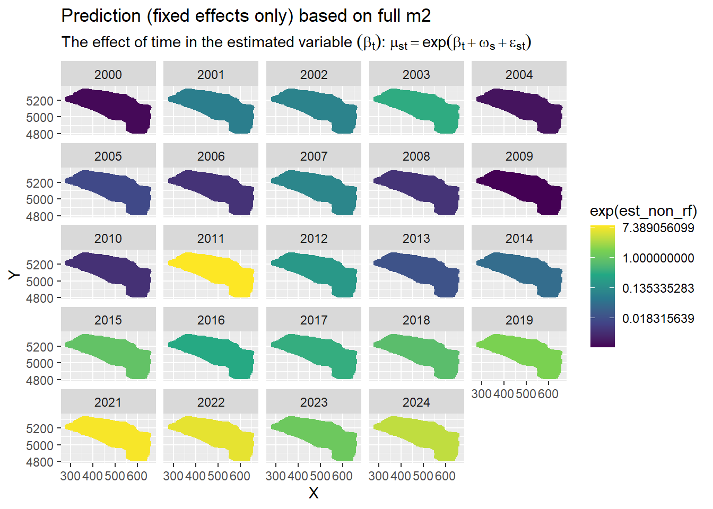
Here spatial & spatiotemporal random effects
plot_m2 <- ggplot(data=p_m2, aes(X, Y, fill = exp(omega_s))) +
geom_raster() +
scale_fill_viridis_c(trans = "log")+
ggtitle("Prediction (spatial random effect) based on full m2",
subtitle = expression("The effect of space in the estimated variable " * (omega[s]) * ": " * mu[st] == exp(beta[t] + omega[s] + epsilon[st])))
plot_m2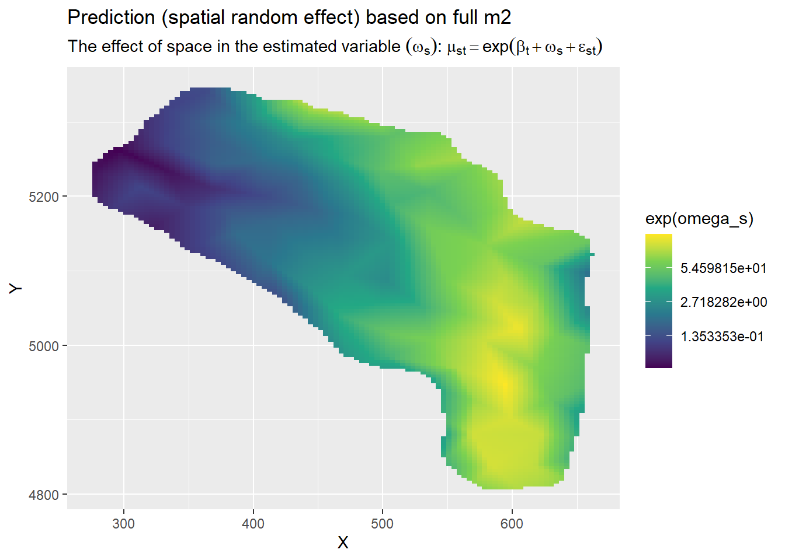
plot_m2 <- ggplot(data=p_m2, aes(X, Y, fill = exp(epsilon_st))) +
geom_raster() +
facet_wrap(vars(Year)) +
scale_fill_viridis_c(trans = "log")+
ggtitle("Prediction (spatiotemporal random effect) based on full m2",
subtitle = expression("The effect of space through time in the estimated variable " * (epsilon[st]) * ": " * mu[st] == exp(beta[t] + omega[s] + epsilon[st])))
plot_m2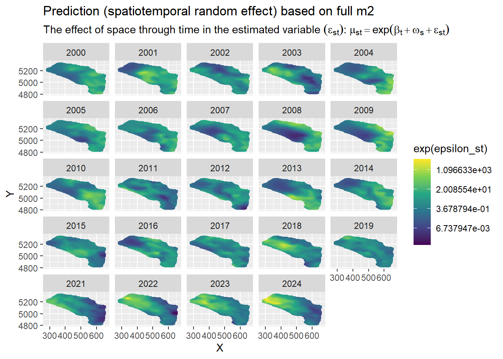
The spatiptempral random effect represent deviation from the fixed effect predictions and the spatial random effect deviations. These represent changes in the spatial paternal through time that are forced by parameters not accounted for in the model.